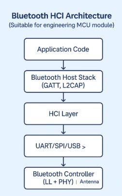
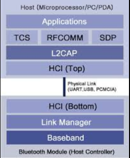

Arquitetura, Protocolos e Aplicações
Arquitetura e Protocolos
A pilha de protocolos do Bluetooth é o conjunto de camadas e protocolos que permitem a comunicação entre dispositivos, desde a transmissão física dos sinais de rádio até a interação de aplicações. Garante interoperabilidade, compatibilidade entre fabricantes e funcionalidades padronizadas na Bluetooth Core Specification.

A pilha pode ser dividida no Host (camadas superiores) e Controller (camadas de rádio), conectados pela HCI.
Camadas Principais
- Camada Física (PHY) / Radio: Responsável pela transmissão e recepção na faixa de 2,4 GHz.
- Link Layer (LL) / Baseband: Gerencia a ligação de rádio, sincronização de pacotes e manutenção da conexão.
- L2CAP (Logical Link Control and Adaptation Protocol): Segmentação e remontagem de pacotes, multiplexação e qualidade de serviço.
- LMP (Link Manager Protocol): Operações de gerenciamento de enlace (autenticação, controle de potência).
- Protocolos de Suporte (RFCOMM e SDP): RFCOMM fornece interface serial; SDP descobre serviços disponíveis.
- HCI (Host Controller Interface): Facilita a comunicação entre software (Host) e hardware (Controller).

Quando comparada ao modelo OSI, a pilha Bluetooth cobre aspectos das camadas física e de enlace, além de protocolos de dados e controle.
Perfis Bluetooth
Os perfis são especificações que definem como dispositivos com diferentes funções interagem. Eles agem especificando serviços de aplicação, além de identificar os papéis e responsabilidades dos dispositivos na conexão.
- Headset Profile: Para fones de ouvido.
- Hands-Free Profile: Para uso de viva-voz em carros.
- Serial Port Profile: Emulação de porta serial via RFCOMM.
- GATT (Generic Attribute Profile): Perfis de BLE utilizam estruturas como esta para definir serviços e características que dispositivos podem expor e acessar.
Aplicações Práticas
Internet das Coisas (IoT)
O Bluetooth desempenha um papel fundamental na IoT por meio do BLE, permitindo comunicação eficiente entre sensores, gateways e dispositivos inteligentes com pequenas baterias. É utilizado em sensores ambientais (temperatura, umidade), rastreadores, monitoramento de saúde e dispositivos domésticos. A extensão Bluetooth Mesh permite a criação de redes em malha, essenciais em cenários complexos de automação e indústrias.
Áudio e Multimídia
Desde fones sem fio até caixas de som, transmite áudio sem cabos. Com o LE Audio (BLE), tornou-se mais estável e eficiente, permitindo transmissão para múltiplos dispositivos (Broadcast Audio). Perfis como A2DP são usados para streaming estéreo de alta qualidade, e o HFP para sistemas de viva-voz automotivos.
Dispositivos Móveis
Presente em smartphones, tablets e smartwatches. Usado para pareamento com acessórios, sincronização de dados, transferência rápida de arquivos sem cabo e conectividade automotiva. Muitos aplicativos utilizam o Bluetooth para acessar sensores externos em tempo real.
← Voltar para o Menu